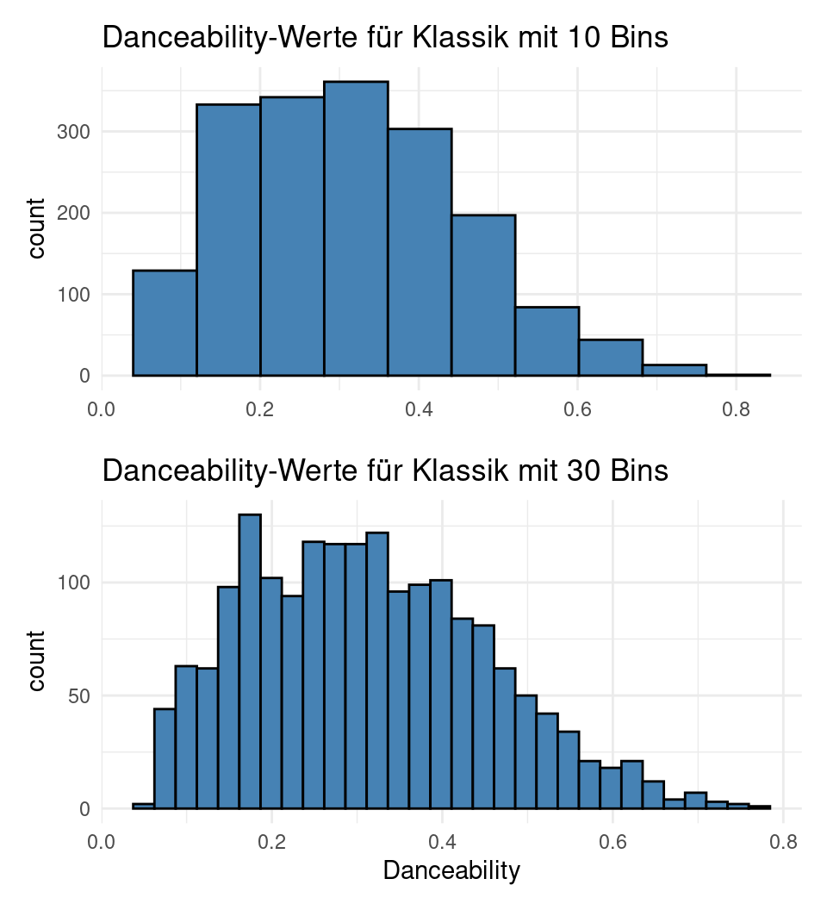
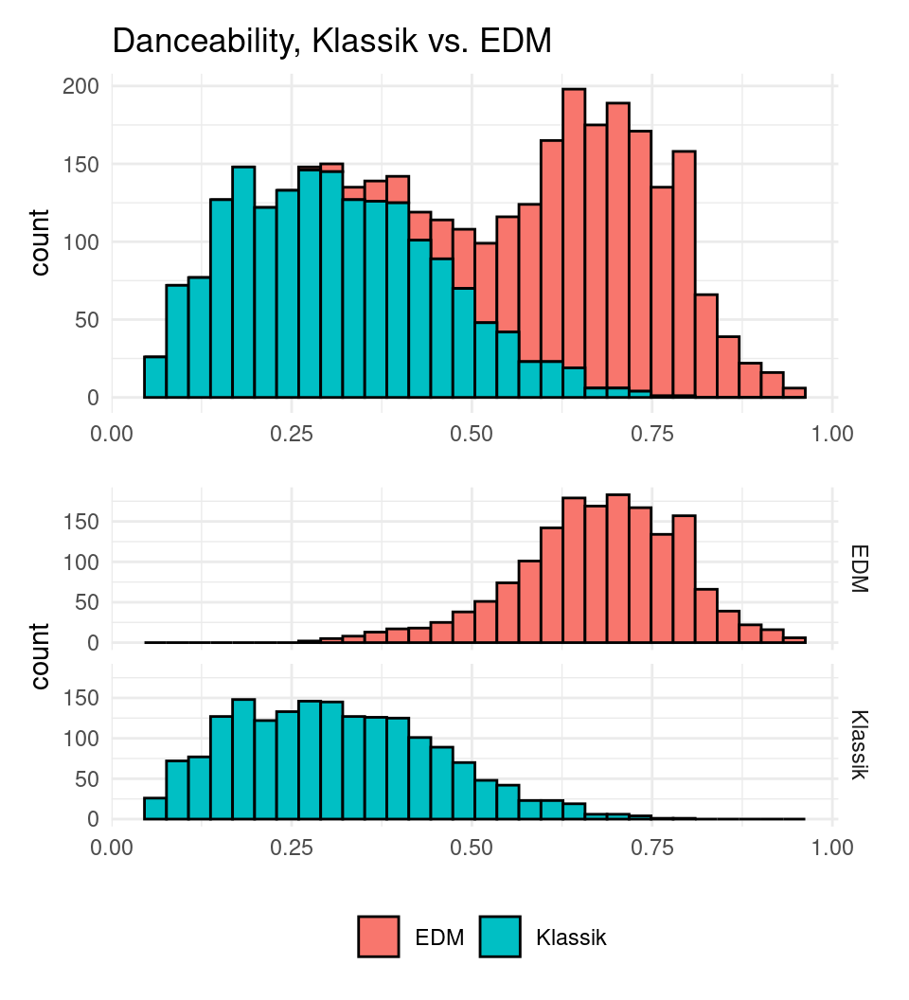
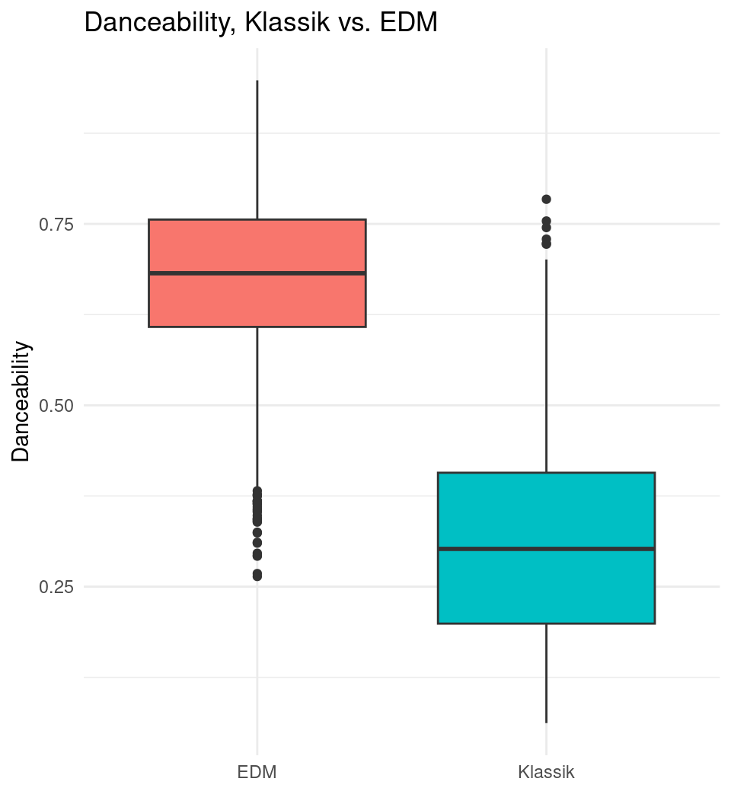
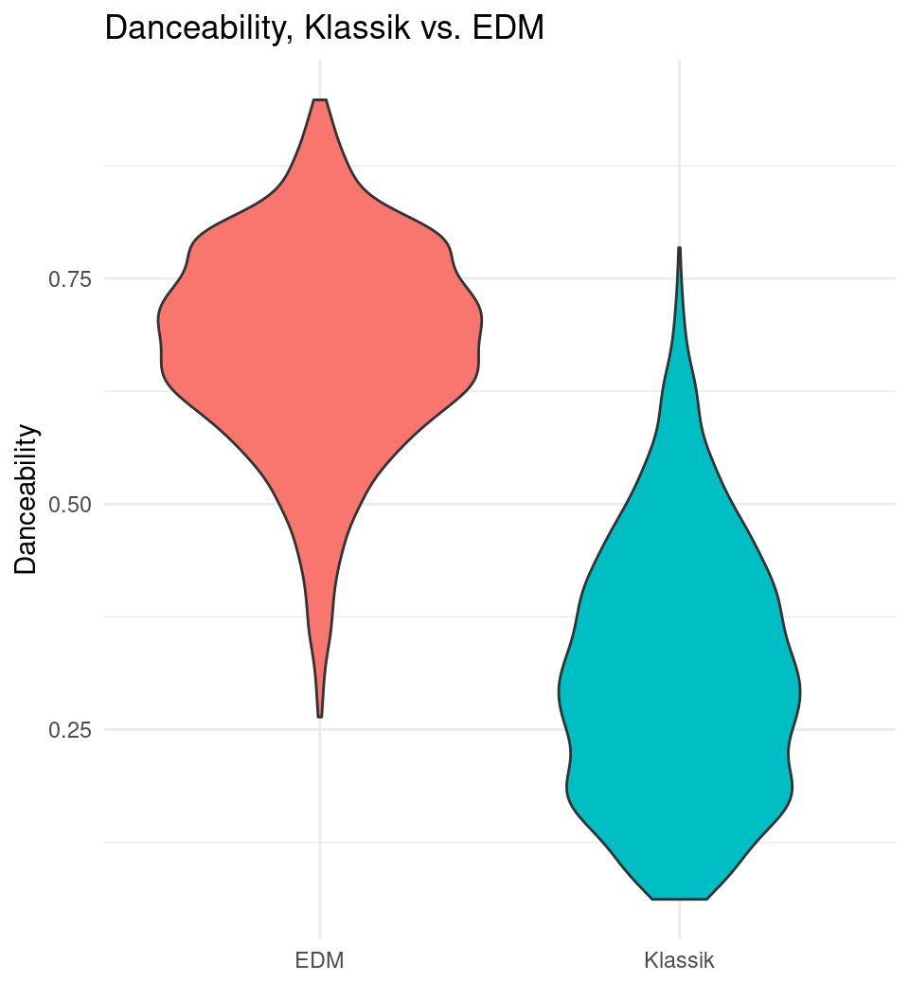
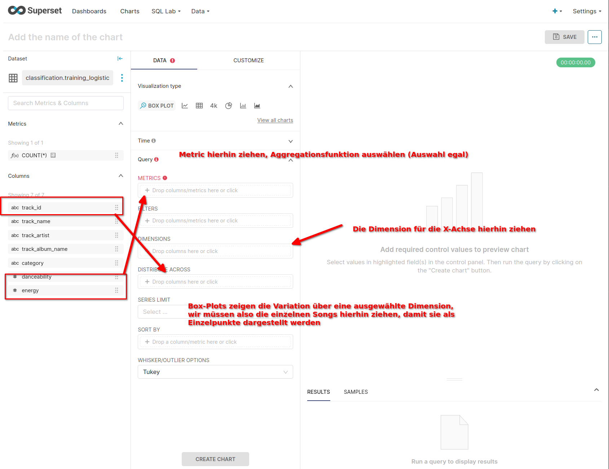
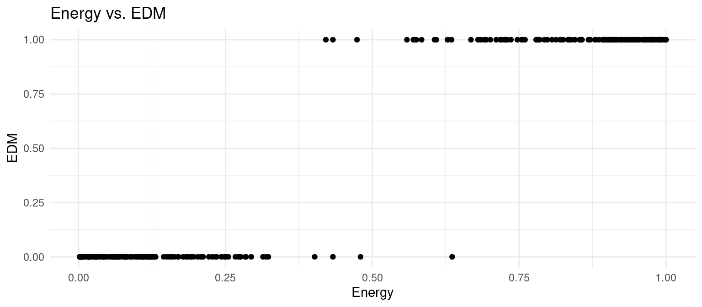
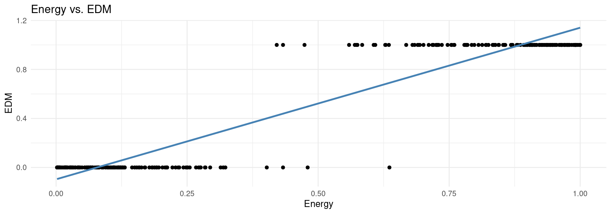
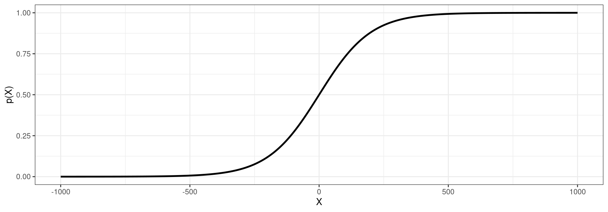
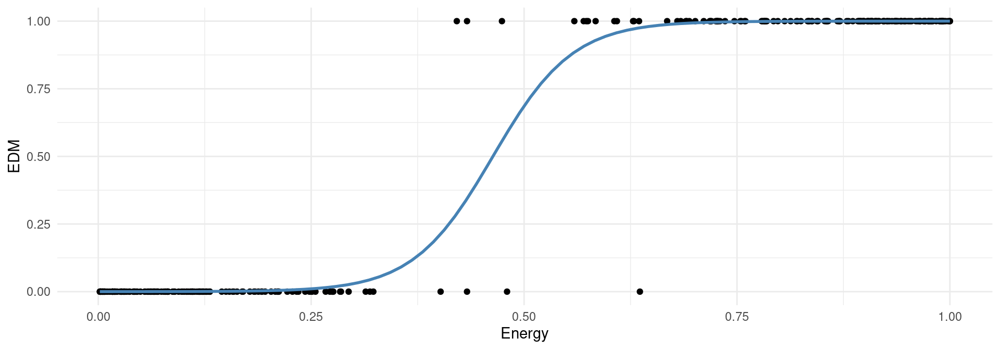
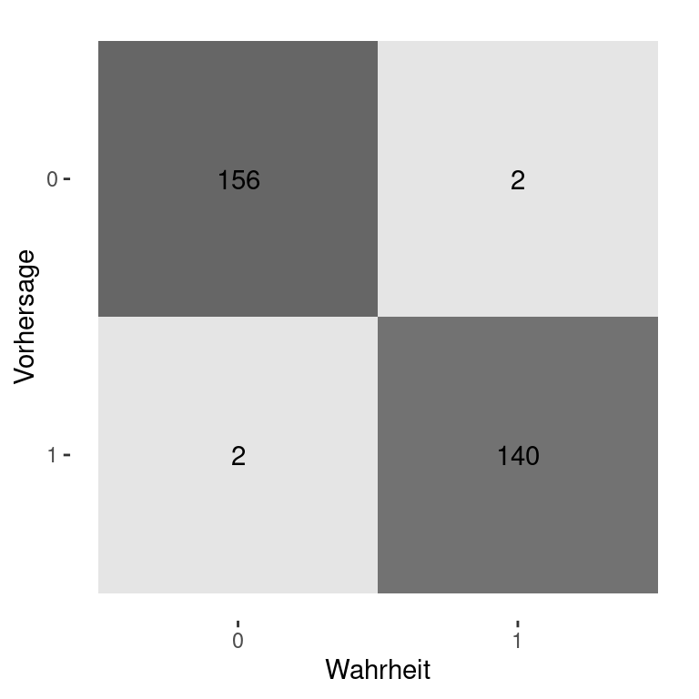

Business Intelligence & Data Science
Vorlesung 6
Der Plan für heute…
Vorlesung
Der Plan für heute…
Vorlesung
- Neue Daten von Tofispy
- Visualisierung von Verteilungen
- Modellgestützte Analysen
- Einfache Logistische Regression
- Modellevaluation
- Multivariate Logistische Regression
- Wie gut kann man Musik-Genres klassifizieren?
Business Case
Recap Tofispy
- Unsere bisherigen Analysen haben gezeigt:
- Tofispy verliert Marktanteile gegenüber der Konkurrenz, insbesondere gegenüber Youtube Music
- Der Grund ist vorallem ein stark ansteigender Trend bei den Kündigungen, während die Registrierungen linear wachsen
- Eine Befragung nach der Kündigung hat ergeben:
- Die Mehrheit hört Musik über Playlists (55.8%)
- Der Großteil ist unzufrieden mit den Empfehlungen (69.2%)
- Handlungsempfehlung: Verbesserung der empfohlenen Playlists
Business Case
Neue Daten von Tofispy
- Zum Einstieg in die Empfehlungsverbesserung hat Tofispy neue Daten bereitgestellt
- Die Daten enthalten eine Auswahl an Songs aus den beiden Genres Klassik und Dance/Electronic (EDM)
- Die Daten enthalten:
- Song ID, Name und Artists,
- Genre als Label, manuell erstellt
- Features:
- Tempo (BPM)
- Danceability (0-1), beschreibt wie gut der Song zum Tanzen geeignet ist
- Energy (0-1), beschreibt wie energiegeladen der Song ist, wobei energiegeladene Songs schnell, intensiv und laut sind
Business Case
Neue Daten von Tofispy
- Die Daten sind via Superset zur Verfügung gestellt und befinden sich im Schema “Classification” und Dataset “training_logistic”
- Die Daten sind bereits bereinigt und enthalten keine fehlenden Werte
- Tofispy generiert jeden Freitag – pünktlich zum Wochenende – eine neue EDM Playlist mit den neuen Releases der Woche und bittet uns, die Klassifizierung für die nächste Playlist zu erstellen
- Erste Frage: Wie gut sind die Daten geeignet, um zwischen den beiden Genres zu unterscheiden?
Visualisierung von Verteilungen
Histogramm
- Einfache Möglichkeit, die Verteilung einer numerischen Variable zu visualisieren
- Die einzelnen Werte der entsprechenden Variable werden in sogenannte Bins gruppiert
- Die Anzahl der Werte in jedem Bin wird gezählt und als Balken dargestellt
- Die Breite der Balken entspricht der Breite der Bins und die Höhe der Balken entspricht der Anzahl der Werte pro Bin
- Die Anzahl der Bins ist wichtig, zu wenige verschleiern den Detailgrad der Verteilung, zu viele Bins können zu zu granular sein
- Viele Tools optimieren die Bin-Zahl, oft aber Trial & Error
Visualisierung von Verteilungen
Histogramm bei mehreren Dimensionen
- Histogramme sind ideal, um einzelne Verteilung zu visualisieren
- Bei mehreren Dimensionen und ähnlichen Verteilungen drohen sich die Verteilungen zu überlagern
- Histogramme sind nicht mehr aussagekräftig
- In diesen Fällen sind mehrere Histogramme zu empfehlen
- Hierbei auf passende X-Achsen achten, um Vergleiche zu erleichtern

Visualisierung von Verteilungen
Box-Plot
- Box Plots sind eine weitere Möglichkeit, die Verteilung einer numerischen Variable über verschiedene Gruppen hinweg zu visualisieren
- Ermöglichen es, viele Gruppen gleichzeitig zu visualisieren und zu vergleichen
- Box-Plots sind einfach, aber hochinformativ, wurden in den 1970er Jahren von John Tukey entwickelt und gewannen schnell an Popularität, da sie sich einfach per Hand zeichnen ließen
- Box-Plots werden oft auch als Box-and-Whisker-Plots bezeichnet
Visualisierung von Verteilungen
Box-Plot
- Die Punktewolke illustriert die Verteilung der Y-Werte der Rohdaten
- Die Linie in der Mitte des Box-Plots repräsentiert den Median, und die Box umschließt die mittleren 50% der Daten
- Die Obergrenze (Untergrenze) der Box ist damit das obere bzw. untere Quartil
- Die oberen und unteren sogenannten Whisker erstrecken sich meist bis zum Maximum und Minimum der Daten
- Alternativ entsprechen die Whisker das 1,5 fache des Interquartilabstands (IQR)
- Einzelne Datenpunkte, die über die Grenzen hinausgehen sind Ausreißer bezeichnet und werden als einzelne Punkte dargestellt

Visualisierung von Verteilungen
Box-Plot
- Die Punktewolke illustriert die Verteilung der Y-Werte der Rohdaten
- Die Linie in der Mitte des Box-Plots repräsentiert den Median, und die Box umschließt die mittleren 50% der Daten
- Die Obergrenze (Untergrenze) der Box ist damit das obere bzw. untere Quartil
- Die oberen und unteren sogenannten Whisker erstrecken sich meist bis zum Maximum und Minimum der Daten
- Alternativ entsprechen die Whisker das 1,5 fache des Interquartilabstands (IQR)
- Einzelne Datenpunkte, die über die Grenzen hinausgehen sind Ausreißer bezeichnet und werden als einzelne Punkte dargestellt

Visualisierung von Verteilungen
Violin-Plot
- Da händische Zeichnungen heute weniger wichtig sind, werden Boxplots in letzter Zeit verstärkt von Violin-Plots abgelöst.
- Statt Boxen und Whiskern zeigen Violin-Plots die gesamte Verteilung der Daten entlang der Y-Achse
- Der dickste Teil des Violins entspricht der höchsten Punktendichte im Datensatz
- Violins sind symmetrisch und beginnen und enden bei den minimalen und maximalen Datenwerten und vergleichbar mit stetigen Histogrammen, die um 90 Grad gedreht sind

Visualisierung von Verteilungen
Violin-Plot
- Da händische Zeichnungen heute weniger wichtig sind, werden Boxplots in letzter Zeit verstärkt von Violin-Plots abgelöst.
- Statt Boxen und Whiskern zeigen Violin-Plots die gesamte Verteilung der Daten entlang der Y-Achse
- Der dickste Teil des Violins entspricht der höchsten Punktendichte im Datensatz
- Violins sind symmetrisch und beginnen und enden bei den minimalen und maximalen Datenwerten und vergleichbar mit stetigen Histogrammen, die um 90 Grad gedreht sind

Visualisierung von Verteilungen
Box-Plots mit Superset
- Superset erlaubt es, Box-Plots direkt zu erstellen, Violin-Plots in der verfügbaren Version jedoch nicht
- Hierzu wählen wir den üblichen Weg:
- Auf der Startseite oben rechts + Chart
- Unter Dataset wählen wir “training_logistic”
- Anschließend suchen wir nach “Box Plot” und wählen es aus
Visualisierung von Verteilungen
Box-Plots mit Superset

Logistische Regression
Trainings- und Testdaten
- Bevor wir die von Tofispy bereitgestellten Daten analysieren, teilen wir die Daten in Trainings- und Testdaten auf
- Das ist ein übliches Prozedere, um die Qualität des Modells zu evaluieren und Overfitting zu vermeiden
- Da der Trainingsdatensatz für das Modelltraining verwendet wird, wählt an oft einen Anteil von 70-80% der Daten für das Training und 20-30% für das Testen
- In unserem Fall verwenden wir nur 300 Beobachtungen, um die Visualisierungen zum Einstieg nicht zu überfrachten
- Neben diesen einfachen Splits gibt es auch komplexere Verfahren wie Kreuzvalidierung
Logistische Regression
Binäre Klassifikation vs. Multiklassen-Klassifikation
- Klassifikationsmodelle können in zwei Kategorien unterteilt werden:
- Binäre Klassifikation: Die abhängige Variable hat nur zwei Kategorien
- Multiklassen-Klassifikation: Die abhängige Variable hat mehr als zwei Kategorien
- In unserem Fall haben wir nur zwei Genres, Klassik und EDM, also eine binäre Klassifikation
- Da die Intuition hinter der logistischen Regression einfacher zu verstehen ist, beginnen wir mit der binären Klassifikation
Logistische Regression
Zurück zu unserer Ausgangsgleichung
- Ausgangspunkt für die logistische Regression ist erneut unsere Grundgleichung \[ y = f(X) + \epsilon, \]
- Wie besprochen ist die Variable \(y\) bei Klassifikationsproblemen qualitativ oder kategorial
- Für die binäre logistische Regression erfolgt eine Umkodierung in eine sog. Dummy-Variable, also 0 oder 1, im Sinne von Falsch und Richtig
- Beispiel bei zwei Genres in der Variable \(y\): \[\begin{equation} y = \begin{cases} 0 & \text{Song $i$ Klassik,}\\ 1 & \text{Song $i$ EDM} \end{cases} \end{equation}\]
Logistische Regression
Intuition
- Die Wahl der Kodierung ist theoretisch willkürlich, aber aus praktischer Sicht ist es sinnvoll, die Kategorie, die interessante Kategorie als 1 zu kodieren
- Als erklärende Variable \(X\) können wir beliebig viele Features verwenden, wir beschränken uns aber zunächst auf eine, nämlich Energy
- Nach der Umkodierung der abhängigen Variable \(y\) sehen unsere Daten aus wie der Auszug rechts
- Unser Ziel ist es, die Wahrscheinlichkeit zu berechnen, mit der ein Song EDM ist, gegeben die Energy
| edm | energy |
|---|---|
| 0 | 0.1920 |
| 1 | 0.7250 |
| 1 | 0.9320 |
| 1 | 0.7470 |
| 1 | 0.9220 |
| 0 | 0.0741 |
| 0 | 0.0026 |
| 0 | 0.0592 |
| 0 | 0.0162 |
| 0 | 0.2510 |
Logistische Regression
Intuition
- Noch intuitiver wird der Zusammenhang, wenn wir die Daten visualisieren mit der abhängigen Variable EDM auf der Y-Achse und der unabhängigen Variable Energy auf der X-Achse

Logistische Regression
Warum nicht einfach lineare Regression?
- Eine lineare Regression ist erste Option, den Zusammenhang zu modellieren
- Wir erhalten folgende Koeffizienten:
\[ \operatorname{\widehat{EDM}} = -0.1 + 1.24 \cdot \text{Energy} \]

Logistische Regression
Warum nicht einfach lineare Regression?
- Das lineare Modell erstellt auf der blauen Geraden nun eine Prognose für die Wahrscheinlichkeit, dass ein Song EDM ist und modelliert den Zusammenhang zwischen \(y\) und \(X\) mit \[ y = \beta_0 + \beta_1 \cdot X \]
- Diese Prognose ist aus mehreren Gründen nicht sinnvoll:
- Die Prognose kann Werte außerhalb des Intervalls \([0,1]\) annehmen
- Wie kann man ein Modell mit mehr als 2 Klassen darstellen, bei denen es keine natürliche Ordnung gibt?
Logistische Regression
Die Logistische Funktion
- Die logistische Funktion ist eine Sigmoid-Funktion, die Werte zwischen 0 und 1 annimmt und eine S-Form aufweist und damit das erste Problem behebt
- Sigmoid Funktionen garantieren, dass alle vorgehersagten Wahrscheinlichkeiten zwischen 0 und 1 liegen, auch wenn die unabhängige Variable \(X\) sehr groß oder sehr klein ist

Logistische Regression
Die Logistische Funktion
- Die logistische Regression modelliert die Wahrscheinlichkeit, dass \(y\) eine bestimmte Kategorie annimmt: \[ P(y = 1|X) = \frac{ e^{(\beta_0 + \beta_1 \cdot X)}}{1 + e^{(\beta_0 + \beta_1 \cdot X)}} \]
- wobei \(P(y = 1|X)\) die Wahrscheinlichkeit ist, dass \(y\) die Kategorie 1 annimmt, also EDM ist, gegeben einen Wert für \(X\), in unserem Fall Energy
- Das finale Modell sieht dann aus wie folgt: \[ P(EDM = 1|Energy) = \frac{ e^{(\beta_0 + \beta_1 \cdot \text{Energy})}}{1 + e^{(\beta_0 + \beta_1 \cdot \text{Energy})}} \]
Logistische Regression
Ergebnis der logistischen Regression
- Wenn wir statt des linearen Modells ein logistisches Modell verwenden, erhalten wir folgenden Zusammenhang zwischen Energy und der Wahrscheinlichkeit, dass ein Song zum Genre EDM gehört:

Logistische Regression
Ergebnis der logistischen Regression
- Aus dem Modell erhalten für für jeden Wert von Energy eine Wahrscheinlichkeit, dass ein Song EDM ist
- Die Wahrscheinlichkeit steigt (sinkt) mit steigender Energy und nähert sich 1 (0) an
- Die Steigung der Kurve ist in der Mitte am größten und nimmt zu den Rändern hin ab und die Kurve hat die typische S-Form
- Die Tabelle rechts zeigt die Wahrscheinlichkeiten für 10 zufällig ausgewählte Songs, sortiert nach der Wahrscheinlichkeit
| energy | track.name | track.artist | category | p_edm |
|---|---|---|---|---|
| 0.255 | Naruto: Alone Theme | Toshio Masuda | Klassik | 0.012 |
| 0.285 | The Wife | Jocelyn Pook | Klassik | 0.022 |
| 0.323 | bad guy | Vitamin String Quartet | Klassik | 0.048 |
| 0.433 | MIDNIGHT | PLAYAMANE | EDM | 0.343 |
| 0.570 | CNTRTE | AQUIHAYAQUIHAY | EDM | 0.907 |
| 0.628 | I'll Take That Back | Avangart Tabldot | EDM | 0.971 |
| 0.629 | OneHundred | HEDEGAARD | EDM | 0.972 |
| 0.636 | Etude No. 9 | Kummerspeck | Klassik | 0.975 |
| 0.680 | Now | Niklas Dee | EDM | 0.990 |
| 0.690 | Me Provocas | Fumaratto | EDM | 0.992 |
Logistische Regression
Generierung von Prognosen
- Aus dem Modell erhalten wir eine Schätzung für die beiden Koeffizienten \(\beta_0\) und \(\beta_1\)
- Das gefittete Modell hat folgende Koeffizienten:
\[ \hat{P}(EDM = 1|Energy) = \frac{ e^{(-9.89 + 21.34 \cdot \text{Energy})}}{1 + e^{(-9.89 + 21.34\cdot \text{Energy})}} \]
- Durch einfaches Einsetzen des jeweiligen Energy-Wertes erhalten wir die Wahrscheinlichkeit gibt das Modell eine entsprechende Prognose aus
Logistische Regression
Von Wahrscheinlichkeiten zu Klassifikationen
- Bisher haben wir nur eine Wahrscheinlichkeit für die Klassenzugehörigkeit von Song \(i\) berechnet, gegeben den Wert für Energy, also
\[ P(\text{EDM}_i = 1|\text{X = Energy}_i) \]
- Im binären Klassifikationsmodell wird ein Schwellenwert oder Cut-Off Point \(C\) festgelegt, der bestimmt, ob ein Song als EDM klassifiziert wird oder nicht
- Die Zuordnung folgt dann allgemein nach der Form:
\[\begin{equation} \text{Klasse} = \begin{cases} 0 & \text{wenn } P(y_i = 1|X= x_i) \leq C \\ 1 & \text{wenn } P(y_i = 1|X= x_i) > C \end{cases} \end{equation}\]
- Ein häufig anzutreffender Default-Wert ist \(C=0.5\)
Logistische Regression
Ergebnis und Evaluation
- Mit dem Default-Wert \(C=0.5\) erhalten wir die rechts dargestellten Klassifikationen für die 10 Beispiel-Songs
- Mit den generierten Klassifikationen lassen sich nun verschiedene Metriken berechnen, um die Qualität des Modells zu bewerten
- Die einfachste Metrik ist die Accuracy, die den Anteil der korrekt klassifizierten Songs angibt
| energy | track.name | track.artist | edm | p_edm | .pred_class |
|---|---|---|---|---|---|
| 0.255 | Naruto: Alone Theme | Toshio Masuda | 0 | 0.012 | 0 |
| 0.285 | The Wife | Jocelyn Pook | 0 | 0.022 | 0 |
| 0.323 | bad guy | Vitamin String Quartet | 0 | 0.048 | 0 |
| 0.433 | MIDNIGHT | PLAYAMANE | 1 | 0.343 | 0 |
| 0.570 | CNTRTE | AQUIHAYAQUIHAY | 1 | 0.907 | 1 |
| 0.628 | I'll Take That Back | Avangart Tabldot | 1 | 0.971 | 1 |
| 0.629 | OneHundred | HEDEGAARD | 1 | 0.972 | 1 |
| 0.636 | Etude No. 9 | Kummerspeck | 0 | 0.975 | 1 |
| 0.680 | Now | Niklas Dee | 1 | 0.990 | 1 |
| 0.690 | Me Provocas | Fumaratto | 1 | 0.992 | 1 |
Modellevaluation
Konfusionsmatrix
- Zur Berechnung der Modellgüte wird die sog. Konfusionsmatrix verwendet, die die Anzahl der korrekt und inkorrekt klassifizierten Beobachtungen zusammenfasst
- Im binären Modell gilt:
- positiv: Beobachtung \(i\) gehört zur interessanten Klasse (in unserem Fall EDM)
- negativ: Beobachtung \(i\) gehört nicht dazu
| Tatsächlich Positiv | Tatsächlich Negativ | Summe Vorhersage | |
|---|---|---|---|
| Vorhergesagt Positiv | True Positive (TP) | False Positive (FP) | Summe Positiv |
| Vorhergesagt Negativ | False Negative (FN) | True Negative (TN) | Summe Negativ |
| Summe Tatsächlich | Summe Positiv Tats. | Summe Negativ Tats. | Gesamtsumme |
Modellevaluation
Konfusionsmatrix
| Tatsächlich Positiv | Tatsächlich Negativ | |
|---|---|---|
| Vorhergesagt Positiv | True Positive (TP) | False Positive (FP) |
| Vorhergesagt Negativ | False Negative (FN) | True Negative (TN) |
- True Positive (TP): Ein TP liegt vor, wenn das Modell ein Objekt korrekt der relevanten Klasse zuordnet. Beispiele hierfür sind die korrekte Identifikation eines Schadens, die richtige Diagnose einer Krankheit oder die richtige Erkennung von Spam.
- False Positive (FP): Ein FP liegt vor, wenn das Modell ein Objekt fälschlicherweise als positiv bzw. relevant klassifiziert, obwohl es tatsächlich negativ ist. Beispiele hierfür sind die Meldung eines nicht vorhandenen Schadens oder die Diagnose einer nicht existierenden Krankheit. FP wird auch als Typ-I Fehler oder Alpha-Fehler bezeichnet.
Modellevaluation
Konfusionsmatrix
| Tatsächlich Positiv | Tatsächlich Negativ | |
|---|---|---|
| Vorhergesagt Positiv | True Positive (TP) | False Positive (FP) |
| Vorhergesagt Negativ | False Negative (FN) | True Negative (TN) |
- True Negative (TN): Ein TN liegt vor, wenn das Modell ein Objekt korrekt als negativ, also nicht der relevanten Klasse zugehörig klassifiziert. Beispiele hierfür sind die korrekte Identifikation eines funktionsfähigen Teils oder die richtige Klassifizierung einer Person als gesund.
- False Negative (FN): Ein FN liegt vor, wenn das Modell ein Objekt falsch als negativ klassifiziert, obwohl es tatsächlich positiv – also relevant – ist. Synonyme hierfür sind Typ-II Fehler oder Beta-Fehler. Beispiele: die ausbleibende Meldung eines aufgetretenen Schadens oder die falsche Nicht-Diagnose einer existierenden Krankheit
Modellevaluation
Konfusionsmatrix im Beispiel und Berechnung der Accuracy
- Unser einfaches Modell zeigt die rechts dargestellte Konfusionsmatrix
- Aus den vier Quadranten lässt sich dann die Accuracy berechnen:
\[ \text{Accuracy} = \frac{TP + TN}{TP + TN + FP + FN} \] \[ = \frac{156 + 140}{156 + 140 + 2 + 2} = 0.987 \]

Modellevaluation
Vor- und Nachteile der Accuracy
- Die Accuracy ist eine einfache und intuitive Metrik, die den Anteil der korrekt klassifizierten Beobachtungen angibt
- Allerdings sollte die Accuracy nur bei einem ausgewogenen Datensatz verwendet werden
- Ausgewogen oder balanciert bedeutet hier, dass die Anzahl der Beobachtungen in den Klassen ungefähr gleich ist
- Im einfachen Beispiel hier ist das der Fall, weshalb die Accuracy ausreichend ist
Modellevaluation
Accuracy bei unbalancierten Datensätzen
- In der Praxis liegen häufig unbalancierte Datensätze vor, sodass die Accuracy allein meist nur geringe Aussagekraft hat
- Wir nehmen ein extremes Beispiel mit 1000 E-Mails, von denen 100 Spam-Mails sind
- Unser Modell zur Spam-Erkennung liefert die Konfusionsmatrix rechts
- Das Modell erkennt nur eine Spam-Nachricht, erreicht jedoch eine Accuracy von über 90%, weil die Zahl der TN sehr hoch ist
| Tatsächlich Positiv | Tatsächlich Negativ | Summe Vorhersage | |
|---|---|---|---|
| Vorhergesagt Positiv | 1 | 0 | 1 |
| Vorhergesagt Negativ | 99 | 900 | 999 |
| Summe Tatsächlich | 100 | 900 | 1000 |
Logistische Regression
Interaktive Visualisierung
Für eine bessere Intuition hinter den Konzepten der logistischen Regression und der Konfusionsmatrix gibt es eine interaktive Visualisierung als Shiny App
Erreichbar über:
Alternativ Download der R-Files von StudIP und Ausführung in RStudio nach Installation der notwendigen Packages im Script
install_packages.RFrage: Welche Auswirkungen hat eine Änderung des Cut-Off Points auf die Konfusionsmatrix und die Accuracy? Welche ist die bestmöglich Accuracy?
Modellevaluation
Precision
- Andere Metriken beheben die Schwächen der Accuracy
- Precision oder Präzision gibt an, wie viele der vom Klassifikator als positiv identifizierten Fälle tatsächlich positiv sind und entspricht dem Anteil der tatsächlich positiven Fälle an der Menge aller als positiv klassifizierten Fälle
\[\text{Precision} = \frac{\text{TP}}{\text{TP + FP}}\]
- Welcher Anteil der positiven Identifikationen war tatsächlich korrekt? Oder: Wenn das Modell einen Datenpunkt positiv klassifiziert, wie wahrscheinlich ist es, dass diese Klassifikation richtig ist?
- Eine hohe Precision bedeutet also, dass der Klassifikator nur wenige irrelevante Fälle als relevant einstuft und ein Klassifikator mit einer Precision von 1,0 liefert keine FP.
Modellevaluation
Recall
- Recall hingegen gibt an, wie viele der tatsächlich positiven Fälle vom Klassifikator als positiv bzw. relevant erkannt wurden:
\[\text{Recall} = \frac{\text{TP}}{\text{TP + FN}}\]
- Ein hoher Recall-Wert bedeutet, dass der Klassifikator viele relevante Fälle erkennt und beantwortet die Frage, welcher Anteil der positiven Ergebnisse richtig identifiziert wurde.
- Wie wahrscheinlich ist es, dass das Modell einen positiven Datenpunkt erkennt?
- Auch häufig als Sensitivität oder True Positive Rate bezeichnet
Modellevaluation
Precision und Recall

Modellevaluation
Precision und Recall für den Spam-Filter
- Um Precision und Recall bei unausgewogenen Datensätzen zu illustrieren, betrachten wir erneut den Spam-Filter
- Für Precision erhalten wir
\[\text{Precision} = \frac{\text{1}}{\text{1 + 0}} = 1\]
- Für Recall ergibt sich
\[\text{Recall} = \frac{\text{1}}{\text{1 + 99}} = 0,01.\]
| Tatsächlich Positiv | Tatsächlich Negativ | Summe Vorhersage | |
|---|---|---|---|
| Vorhergesagt Positiv | 1 | 0 | 1 |
| Vorhergesagt Negativ | 99 | 900 | 999 |
| Summe Tatsächlich | 100 | 900 | 1000 |
- Wenn das Modell eine Mail als Spam klassifiziert, ist diese Prognose zu 100% korrekt
- Das Modell erkennt aber nur 1% der tatsächlichen Spam-Mails.
Modellevaluation
Precision und Recall für den Spam-Filter
- Welches Maß ist nun das Richtige?
- Wenn ein balancierter Datensatz vorliegt, kann Accuracy bedenkenlos verwendet werden, um das Modell zu evaluieren
- Wenn wir sicher sein wollen, dass eine positive Vorhersage korrekt ist, dann ist Precision die angemessene Evaluationsmetrik. Dies ist oft der Fall, wenn FP mit höheren Kosten verbunden sind, als FN.
- Wenn es wichtig ist, so viele positive Fälle wie möglich zu identifizieren, sollte ein Modell mit hohem Recall verwendet werden. In diesem Fall sind die Kosten von FN besonders hoch, sodass es besser ist, einige Fälle fälschlicherweise negativ zu klassifizieren, als dass uns tatsächlich positive Fälle durch die Lappen gehen
Modellevaluation
F1-Score
- Oft sind Kosten und Nutzen von FP und FN Klassifikationen nicht eindeutig
- Der F1 Score kompensiert die Nachteile der Accuracy bei unbalancierten Datensätzen zu kompensieren und legt gleichzeitig einen ausgewogenen Fokus auf Precision und Recall:
\[ F1 = 2 \cdot \frac{\text{Precision} \cdot \text{Recall}}{\text{Precision} + \text{Recall}} \]
- F1 ist das harmonische Mittel von Precision und Recall und liegt zwischen 0 und 1
Modellevaluation
F1-Score
- Im Spam Beispiel:
\[ F1 = 2 \cdot \frac{\text{1} \cdot \text{0,01}}{\text{1} + \text{0,01}}= 0,0198 \]
- Dieser Wert ist deutlich niedriger, als uns die 90,1% Accuracy zunächst suggerieren.
- Trotzdem ist das Beispielmodell nahezu nutzlos, wie anhand des niedrigen F1-Scores erkennbar wird.
Modellevaluation
Abschließende Bemerkungen
- Bei einem balancierten Datensatz und gleicher Gewichtung von FP und FN ist die Accuracy die einfachste und intuitivste Metrik
- Bei unbalancierten Datensätzen oder unterschiedlichen Kosten von FP und FN sollten Precision, Recall und F1-Score verwendet werden
- Wenn FP höhere Kosten haben, dann sollte Precision im Fokus stehen
- Wenn FN höhere haben, dann sollte Recall im Fokus stehen
Modellevaluation
Kosten von FP und FN
Die meisten Klassifikationsmethoden basieren auf der Annahme, dass FP und FN gleich problematisch sind
In praktischen Szenarios ist dies jedoch selten der Fall, Beispiel:
Betrugserkennung: Eine Haftpflichtversicherung prüft Schadensmeldungen mit ML. Das Modell soll den Schaden automatisch abwickelnd und entweder als “Zahlung” oder “Keine Zahlung” klassifizieren, je nachdem ob ein Betrugsversuch vorliegt
Fragen:
- Was ist die positive (interessante) Klasse aus Sicht der Versicherung?
- Welche Fälle sind dann FN und FP?
- Welche Fehlklassifikation ist teurer? Welches Maß sollte für das Modell maximiert werden?
Logistische Regression
Verhältnis von Precision und Recall
Für eine bessere Intuition hinter den Konzepten der logistischen Regression und der Konfusionsmatrix gibt es eine interaktive Visualisierung als Shiny App
Erreichbar über:
Alternativ Download der R-Files von StudIP und Ausführung in RStudio nach Installation der notwendigen Packages im Script
install_packages.RFrage: Welche Auswirkungen hat eine Änderung des Cut-Off Points auf die Konfusionsmatrix und die Accuracy? Welche ist die bestmöglich Accuracy?
Logistische Regression
Mehrere unabhängige Variablen
- Bisher haben wir nur eine unabhängige Variable, Energy, betrachtet
- Da die Aufteilung jedoch nicht perfekt war, ist es sinnvoll, weitere Features zu verwenden, bspw. Danceability
- Allgemein hat das logistische Modell mit mehreren unabhängigen Variablen die Form:
\[ P(y = 1|X) = \frac{ e^{(\beta_0 + \beta_1 \cdot X_1 + \beta_2 \cdot X_2 + \ldots + \beta_P \cdot X_P)}}{1 + e^{(\beta_0 + \beta_1 \cdot X_1 + \beta_2 \cdot X_2 + \ldots + \beta_P \cdot X_P)}} \]
- Mit den beiden Variablen Energy und Danceability erhalten wir folgendes Modell:
\[ P(EDM = 1|\text{Energy, Danceability}) = \frac{ e^{(\beta_0 + \beta_1 \cdot \text{Energy} + \beta_2 \cdot \text{Danceability})}}{1 + e^{(\beta_0 + \beta_1 \cdot \text{Energy} + \beta_2 \cdot \text{Danceability})}} \]
Logistische Regression
Mehrere unabhängige Variablen
Logistische Regression
Mehrere unabhängige Variablen
- Für das Modell mit zwei Variablen erhalten wir die Konfusionsmatrix auf der rechten Seite.
- Accuracy, Precision, Recall und F1-Score sind:
| Metric | Value |
|---|---|
| accuracy | 0.9933 |
| recall | 0.9930 |
| precision | 0.9930 |
| f_meas | 0.9930 |
Quellen
Business Intelligence & Data Science, SoSe 2024
James, Gareth, Daniela Witten, Trevor Hastie, und Robert Tibshirani. 2021. An Introduction to Statistical Learning: with Applications in R. Second edition. Springer texts in statistics. New York NY: Springer. https://doi.org/10.1007/978-1-0716-1418-1.
Maleki, Farhad, Katie Ovens, Keyhan Najafian, Behzad Forghani, Caroline Md, und Reza Forghani. 2020. „Overview of Machine Learning Part 1“. Neuroimaging Clinics of North America 30 (November): e17–32. https://doi.org/10.1016/j.nic.2020.08.007.
Wilke, C. 2019. Fundamentals of data visualization: a primer on making informative and compelling figures. First edition. Sebastopol, CA: O’Reilly Media. https://clauswilke.com/dataviz/.